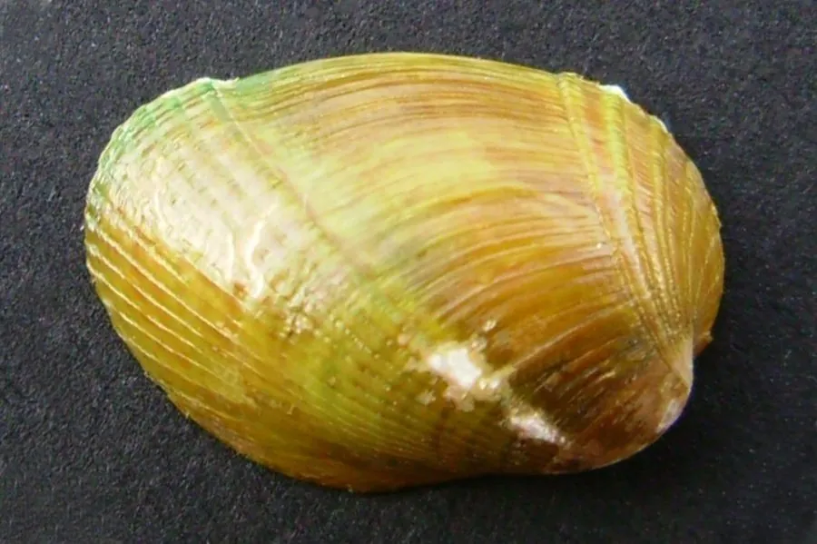

软体动物 · 动物界
突壳短肌蛤 Musculus senhousei

壳小而薄、后端突起的贻贝类，用足丝附着在泥沙和贝壳上，常成群覆盖滩涂，是鱼虾的天然饵料和养殖对象。
- 分类
- 门软体动物门纲双壳纲目贻贝目科贻贝科属短肌蛤属
- 栖息环境
- 潮间带至水深数米的泥沙和沙泥底质，喜河口有机质丰富处
- 地理分布
- 西北太平洋，包括中国南北沿海、日本和朝鲜半岛
- 保护级别
- 尚无保护级别；种群受滩涂开发和养殖塘占用影响
物种志
突壳短肌蛤的贝壳很小，壳长约两至三厘米，壳质薄而脆，呈长卵形，前端圆，后端尖而突起，壳面呈黄绿、褐绿至灰褐色，有细密的生长纹和放射状的色带。壳内面灰白，铰合部无齿，靠韧带连接。足部细长，能分泌足丝，把身体附着在泥沙颗粒、贝壳和石砾上。它常成群聚集，用足丝相互缠连，在滩涂表面形成一层密密麻麻的贝毯。
它分布于西北太平洋，包括中国南北沿海、日本和朝鲜半岛，栖息在潮间带至水深数米的泥沙和沙泥底质，尤其喜欢河口附近有机质丰富的滩涂。它以硅藻和有机碎屑为食，靠鳃滤食，生长快，繁殖期在春夏。突壳短肌蛤个体虽小，但数量极大，是鱼、虾、蟹的天然饵料，也是对虾养殖中常用的鲜活饵料，部分地区还用它做肥料和饲料。目前尚无保护级别，种群受滩涂开发和养殖塘占用影响。
形态与习性
- 食性靠鳃滤食硅藻和有机碎屑
- 壳长约两至三厘米，壳薄而后端突起
- 附着分泌足丝附着于泥沙、贝壳和石砾
- 习性成群聚集，用足丝相互缠连成贝毯
- 繁殖春夏繁殖，生长快，数量大
- 用途鱼虾天然饵料，也作养殖饵料和肥料
趣味知识
- 突壳短肌蛤只有指甲盖大小，却能用足丝把彼此缠成一大片贝毯。
- 它的后端明显尖突，是区别于其他小型贻贝的重要特征。
- 对虾养殖场常把它作为鲜活饵料，价格低、投喂方便。